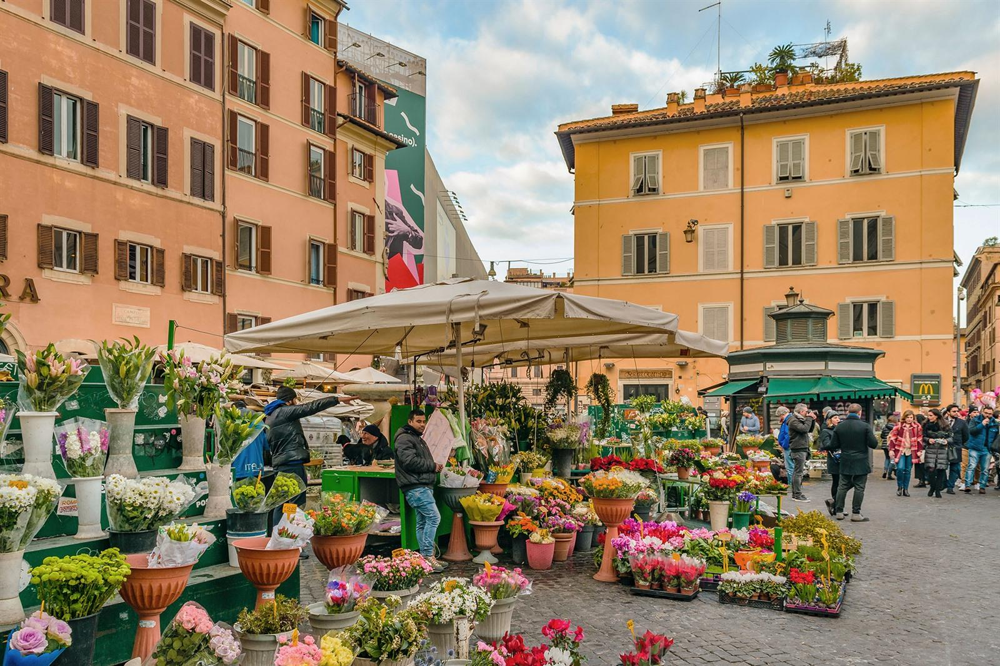
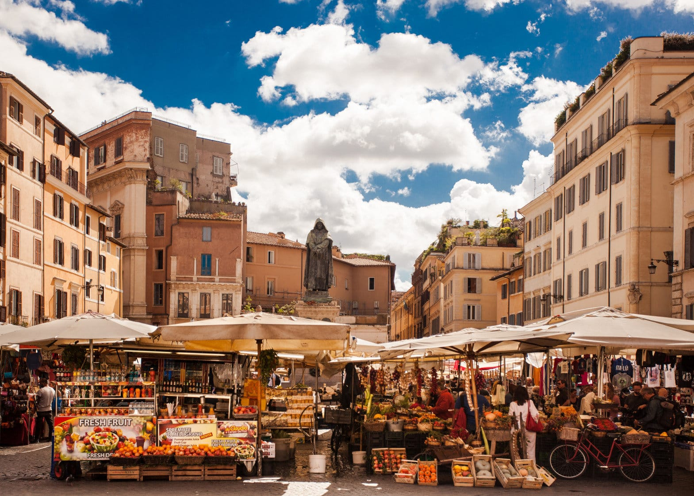
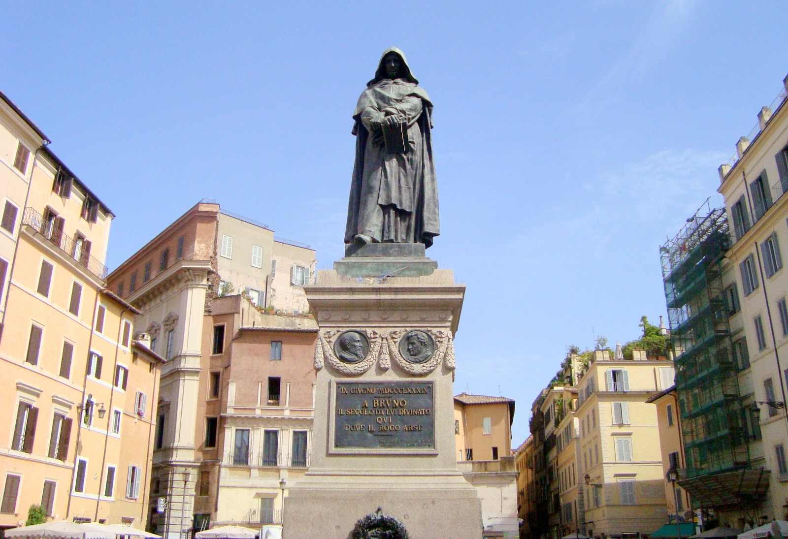

Campo de' Fiori: El Alma de la Plaza Romana
De Prado de Flores a Centro de Ejecuciones
Durante la antigüedad, el espacio que hoy ocupa Campo de' Fiori era simplemente un terreno abierto junto al río Tíber que se inundaba con frecuencia, lo que dio pie a que creciera una densa vegetación y un prado de flores que terminó dándole su nombre definitivo. No fue hasta el siglo XV que la plaza comenzó a urbanizarse, pavimentándose y llenándose de posadas, talleres y palacios señoriales que la transformaron en un eje comercial clave de la Roma renacentista. Sin embargo, este florecimiento trajo consigo una faceta sombría, ya que el lugar fue elegido como el escenario principal para las ejecuciones públicas y los castigos de la Inquisición.
El evento más trascendental y trágico de esta época ocurrió en el año 1600, cuando el filósofo, astrónomo y fraile dominico Giordano Bruno fue quemado vivo en la hoguera tras ser acusado de herejía por defender teorías científicas revolucionarias, como que el universo era infinito y que la Tierra giraba alrededor del Sol. Hoy en día, una imponente y austera estatua de bronce de Giordano Bruno domina el centro exacto de la plaza. El monumento, inaugurado a finales del siglo XIX, mira fijamente al suelo con una expresión severa, convirtiéndose en un símbolo universal de la libertad de pensamiento y de expresión frente a la opresión.
El Color del Mercado y la Vida Nocturna Actual
En la actualidad, Campo de' Fiori ha dejado atrás su pasado oscuro para convertirse en uno de los puntos más vibrantes, coloridos y concurridos de toda Roma. Cada mañana, de lunes a sábado, la plaza se transforma en un bullicioso mercado al aire libre donde los productores locales montan sus puestos bajo grandes sombrillas. Es el lugar perfecto para sumergirse en los aromas y sabores de la vida romana cotidiana, ofreciendo desde frutas y verduras frescas hasta pastas artesanales, especias multicolores, quesos, embutidos y flores. Los vendedores atraen a los transeúntes con sus gritos típicos, creando una atmósfera ruidosa y encantadora que conserva el verdadero espíritu de la cultura italiana.
Cuando el sol se oculta y el mercado se retira, la plaza cambia de piel por completo. Los puestos limpian el lugar para dar paso a las terrazas de los numerosos cafés, restaurantes y bares de cócteles que rodean el perímetro. Campo de' Fiori se convierte entonces en el epicentro de la vida nocturna romana, atrayendo tanto a jóvenes locales como a turistas de todo el mundo que se reúnen para disfrutar de un aperitivo, cenar al aire libre o simplemente charlar junto a la estatua de Giordano Bruno. Este contraste diario la consolida como una parada obligatoria para entender el pulso real de la capital italiana.
Galería de Imágenes


